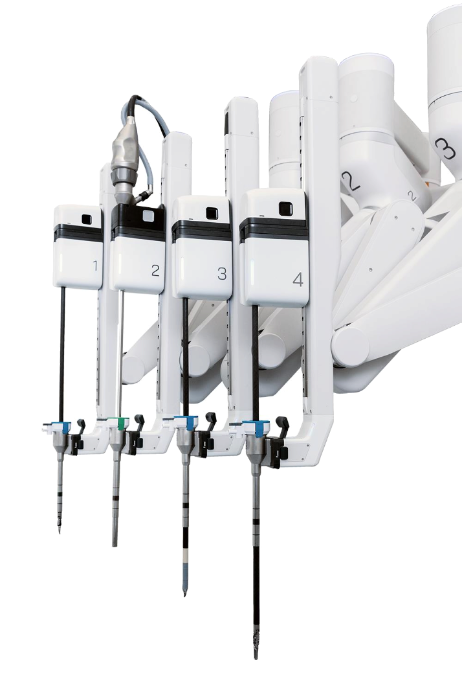

Sentir
e腔镜手术机器人
了解详情

康诺思腾亮相2022国际微创外科大会西湖峰会
2022.11.06
康诺思腾亮相2022东方国际泌尿外科男科手术周暨第十六届前列腺疾病论坛和SIU
2022.11.06
康诺思腾亮相2022东方国际泌尿外科男科手术周暨第十六届前列腺疾病论坛和SIU
2022.11.06
康诺思腾亮相2022东方国际泌尿外科男科手术周暨第十六届前列腺疾病论坛和SIU
2022.11.06
查看更多